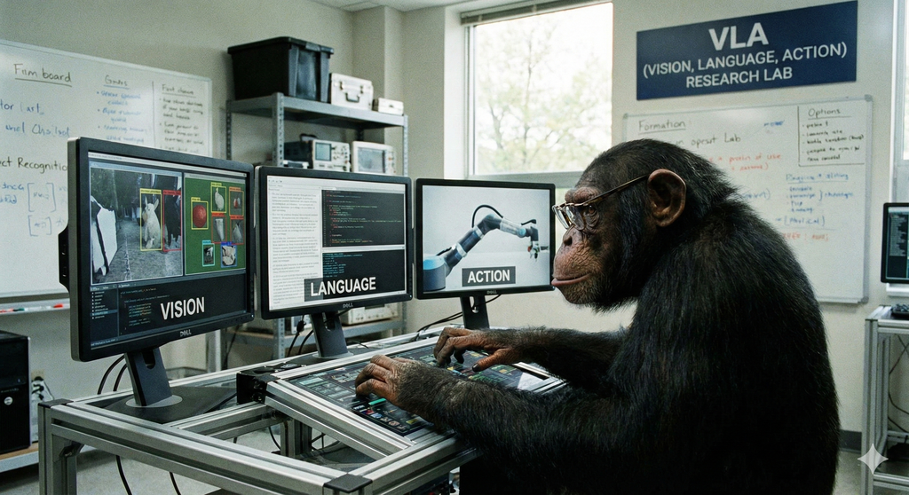

Vision-Language-Action(VLA) 모델

연구
- RT-2 Vision-Language-Action 모델 (2023-07-28)
- Vision-Language-Action(VLA) 모델 (2025-10-08)
- TinyVLA 로봇 조작을 위한 고속·데이터 효율적 시각-언어-행동 모델
- CoA-VLA (Chain-of-Affordance VLA)
- Hierarchical Vision-Language-Action (Hierarchical VLA, 계층적 시각-언어-행동) 모델
- Hi Robot 계층적 시각-언어-행동 모델을 통한 개방형 명령 수행
- OpenVLA-OFT (Optimized Fine-Tuning)
- Visualizing Thought (시각적 사고)
- ReFineVLA
- VAMOS 능력 조절 및 제어 가능한 내비게이션을 위한 Hierarchical VLA model (2025-02-26)
- Embodiment Transfer Learning (신체 전이 학습, ET) for VLA
- EGoT (Embodied Graph-of-Thought) 및 ET-VLA 프레임워크
- Compressor-VLA 효율적 로봇 조작을 위한 명령어 유도 시각 토큰 압축 프레임워크
- VINE 성공 및 실패 데모를 활용한 Hierarchiical VLA 모델 (2025-12-03)
- VINE 실패 데이터를 활용해 로봇의 강건성을 향상시킨 VLA 모델